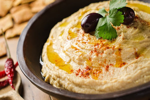

Mini Peynir Topları ve Üzüm Şişleri

Malzemeler:
- 1 kutu konserve nohut veya 1 su bardağı haşlanmış nohut
- 2-3 diş sarımsak
- 1-2 limonun suyu
- 2 yemek kaşığı zeytinyağı
- Tuz
- Susam (isteğe bağlı)
Hazırlık:
- Konserve nohut kullanacaksanız, nohutları suyunu süzerek temizleyin. Haşlanmış nohut kullanacaksanız, önceden haşlayıp süzün.
- Nohutları bir mutfak robotu veya blendıra alın. İyice ezilene kadar karıştırın.
- Sarımsakları ezerek nohutların içine ekleyin.
- Tahin, limon suyu, zeytinyağı ve biraz tuz ekleyerek tekrar karıştırın.
- Karışım pürüzsüz bir kıvama gelene kadar mutfak robotunda veya blendırda iyice çekin. İhtiyaç halinde biraz su veya zeytinyağı ekleyerek kıvamını ayarlayabilirsiniz.
- Hummusu bir servis tabağına alın. Üzerine biraz zeytinyağı gezdirip, isteğe bağlı olarak susam serpebilirsiniz.
- Dilimlediğiniz havuç, salatalık, kırmızı biber gibi sebzelerle birlikte servis yapın.
- Hummus, buzdolabında kapalı bir kapta 3-4 gün kadar taze kalabilir. Afiyet olsun!